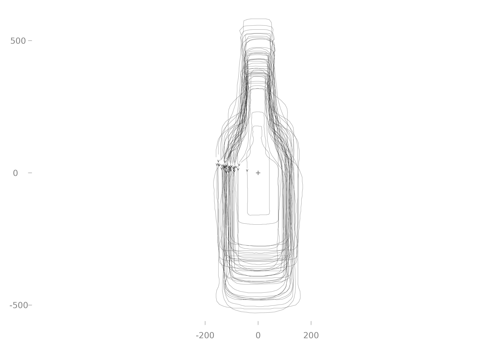
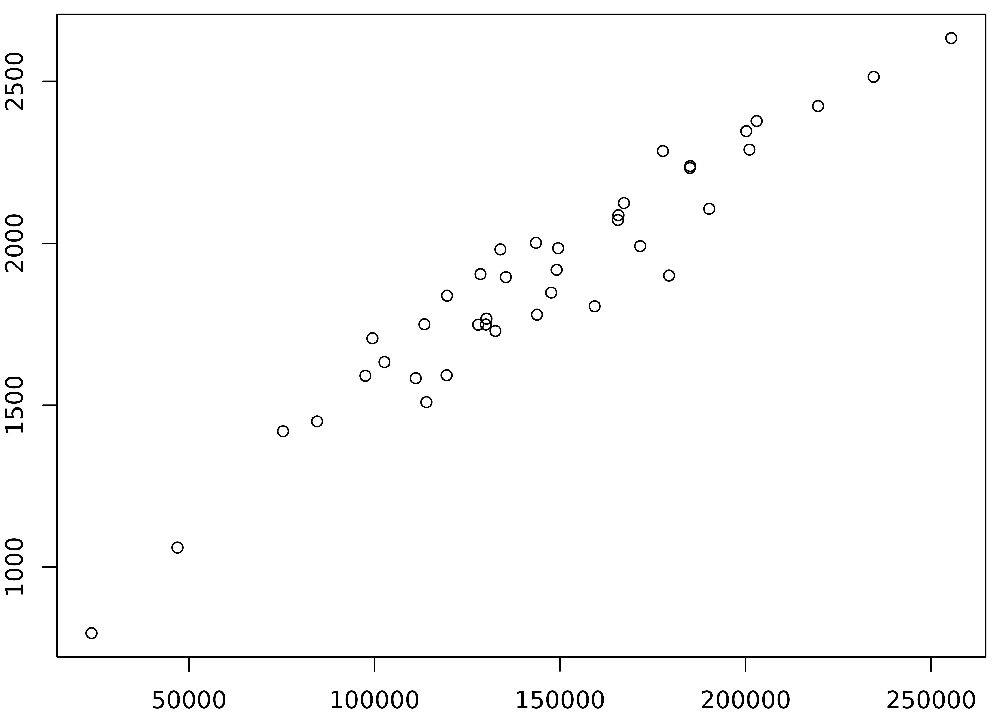

Momocs2 uses magrittr's pipe operators for clear, readable workflows.
Details
Forward pipe (%>%): Passes result forward to next function
Tee pipe (%T>%): Passes input forward unchanged (useful for side effects like plotting)
Exposition pipe (%$%): Exposes column names for direct use
Examples
# Forward pipe - standard workflow.
# Almost exactly equivalent to (now native) |>
bot %>%
coo_center() %>%
coo_scale() %>%
measure("area")
#> # A tibble: 40 × 6
#> id coo type fake price coo_area
#> <chr> <out> <fct> <fct> <dbl> <dbl>
#> 1 brahma (138 x 2) whisky a 3 1.77
#> 2 caney (168 x 2) whisky a 1.2 1.82
#> 3 chimay (189 x 2) whisky a 3.8 2.21
#> 4 corona (129 x 2) whisky a 2.6 1.67
#> 5 deusventrue (152 x 2) whisky a 1.1 1.84
#> 6 duvel (161 x 2) whisky a 3.1 2.35
#> 7 franziskaner (124 x 2) whisky a 2.6 1.78
#> 8 grimbergen (126 x 2) whisky a 2.9 2.05
#> 9 guiness (183 x 2) whisky a 1.2 1.98
#> 10 hoegardeen (193 x 2) whisky a 3.6 1.76
#> # ℹ 30 more rows
# Tee pipe - plot without breaking chain
bot %>%
coo_center() %T>%
pile() %>% # Plot without breaking the chain
coo_scale()

#> # A tibble: 40 × 5
#> id coo type fake price
#> <chr> <out> <fct> <fct> <dbl>
#> 1 brahma (138 x 2) whisky a 3
#> 2 caney (168 x 2) whisky a 1.2
#> 3 chimay (189 x 2) whisky a 3.8
#> 4 corona (129 x 2) whisky a 2.6
#> 5 deusventrue (152 x 2) whisky a 1.1
#> 6 duvel (161 x 2) whisky a 3.1
#> 7 franziskaner (124 x 2) whisky a 2.6
#> 8 grimbergen (126 x 2) whisky a 2.9
#> 9 guiness (183 x 2) whisky a 1.2
#> 10 hoegardeen (193 x 2) whisky a 3.6
#> # ℹ 30 more rows
# Exposition pipe - access columns directly
bot %>%
measure(c("area", "perim")) %$%
plot(coo_area, coo_perim)
